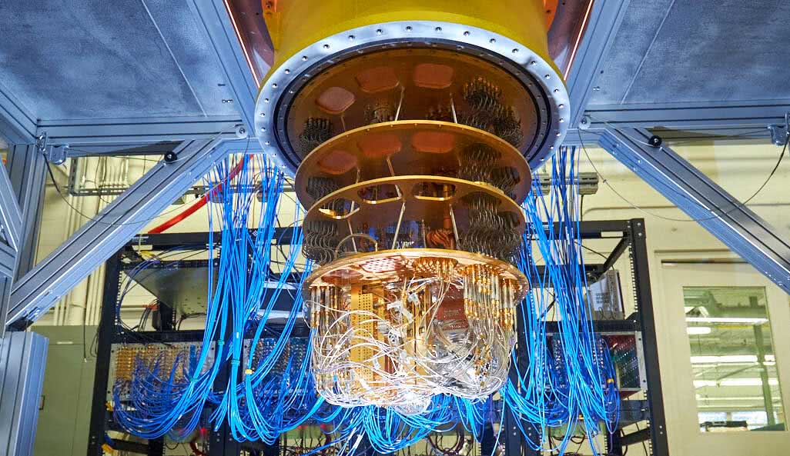

O QUE É COMPUTAÇÃO QUÂNTICA?
A computação quântica é a ciência que estuda as aplicações das teorias e propriedades da mecânica quântica na Ciência da Computação. Dessa forma seu principal foco é o desenvolvimento do computador quântico. Na computação clássica o computador é baseado na arquitetura de Von Neumann que faz uma distinção clara entre elementos de processamento e armazenamento de dados, isto é, possui processador e memória destacados por um barramento de comunicação, sendo seu processamento sequencial. Entretanto os computadores atuais possuem limitações, como por exemplo na área de Inteligência Artificial (IA), onde não existem computadores com potência ou velocidade de processamento suficiente para suportar uma IA avançada. Dessa forma surgiu a necessidade da criação de um computador alternativo dos usuais que resolvesse problemas de IA, ou outros como a fatoração em primos de números muito grandes, logaritmos discretos e simulação de problemas da Física Quântica.